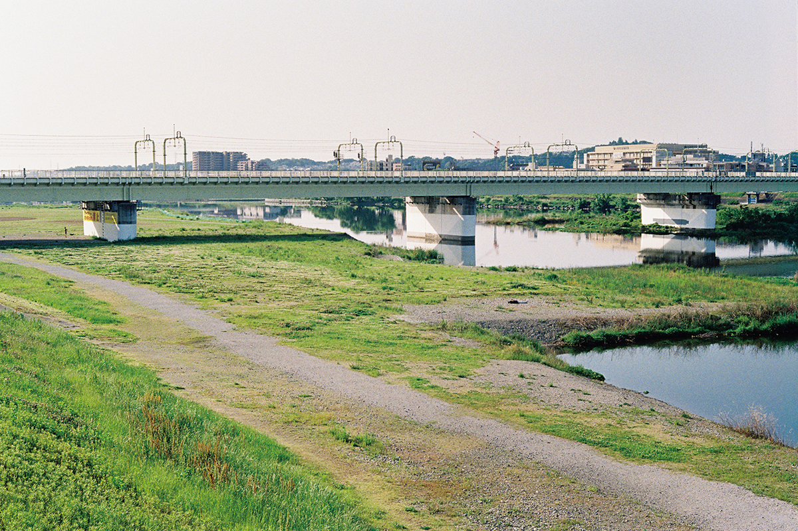
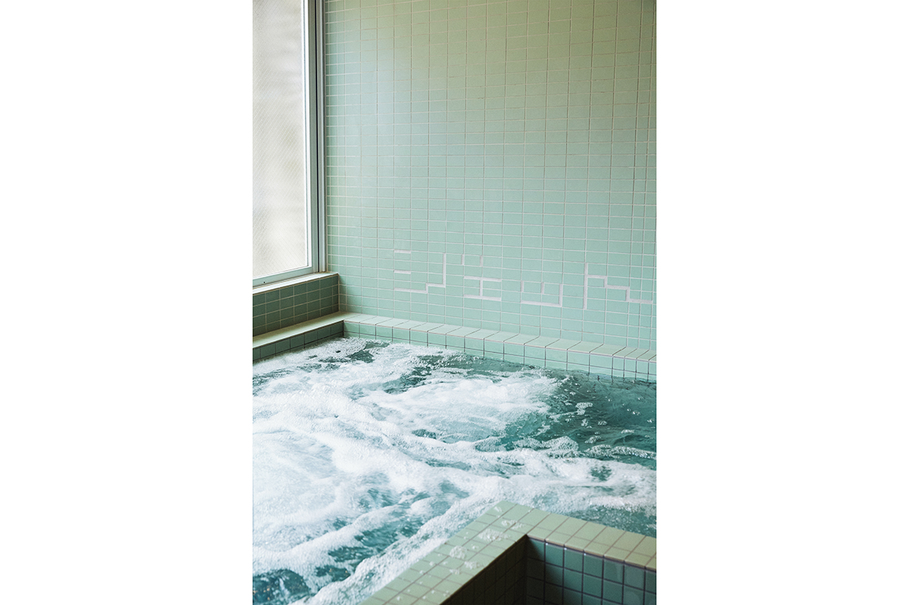
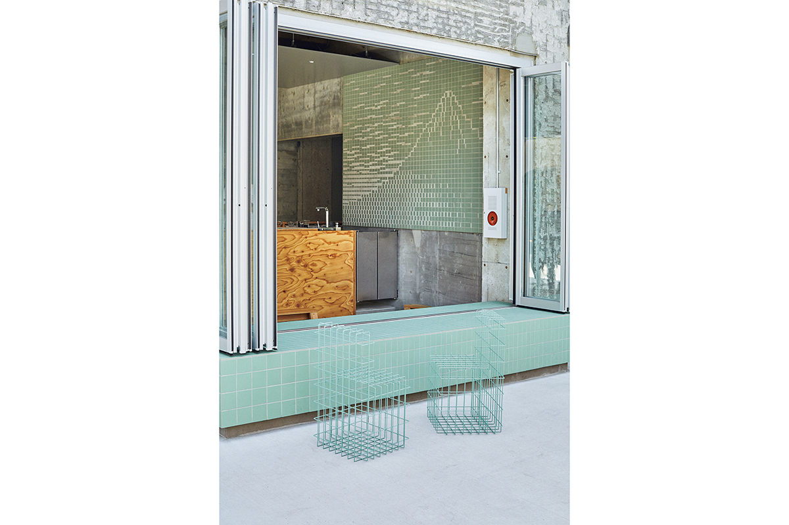

Токио · Комаэ · сэнто
«Комаэ-ю»: старейшая баня Комаэ в зелёной плитке

Старейшая баня города Комаэ на западе Токио после обновления 2023 года оделась в зелёную плитку. Обновление придумал архитектор Дзё Нагасака, для которого сэнто это общественное место, каких в больших городах становится всё меньше.
Место
Баня у зелёной аллеи
Комаэ это небольшой город к западу от центра Токио, по соседству с районом Сэтагая: от Синдзюку сюда 20 минут на поезде. Рядом течёт река Тама, а у подножия соседнего лесистого склона бьют родники, так что воды и зелени здесь в избытке.
«Комаэ-ю» открылась в 1955 году и остаётся старейшей баней города. В 2023 году её обновили с мыслью сделать местом, куда приходят расслабиться и поднять настроение, как на солнечную полянку. Проект сделал архитектор Дзё Нагасака, который перед этим перестроил баню Koganeyu в Сумиде.
Дизайн
Плитка, на которой отдыхает взгляд
Первое, что бросается в глаза, это зелёная плитка. Баня стоит у пешеходной аллеи, и цвет архитектор взял у окружающей природы: у реки Тама и родникового склона. Плитку сделали специально для «Комаэ-ю» в Тадзими, городе в префектуре Гифу.
Идею подсказала старая баня в Киото, куда Нагасака непременно заходил, бывая в этом городе. Стены там были выложены мозаикой.
«Мне нравилось сидеть в горячей ванне и бездумно её разглядывать. Поэтому здесь я позволил себе игру: сочетал плитку трёх размеров, обычную, в половину и в четверть»
архитектор Дзё Нагасака

Плитки складываются как пазл и незаметно сменяют одна другую, так что глазу всегда есть на чём остановиться. Из плитки сложены и надписи, например над углекислой ванной, а на стене кафе-бара у входа плиткой нарисована Фудзи: после бани можно выпить, глядя на гору.
Кафе
SIDE STAND и веранда
Паб, который раньше был в передней части здания, превратился в стойку для гостей бани и кафе-бар SIDE STAND. Пустырь вокруг сделали энгавой, открытой верандой: здесь наливают крафтовое пиво, сауэры и сакэ, подают закуски к выпивке. В 2025 году здесь время от времени устраивали праздники и маркеты, например «Энгава-ити» с едой, товарами и мастер-классами.

Сюда заходят и те, кто в баню не идёт, просто выпить, а организаторы местного фестиваля проводят здесь свои встречи. Так вокруг «Комаэ-ю» снова собирается соседское сообщество.
Идея
Баня вместо парка
«В городах всё строже правила для парков, и общественных мест остаётся всё меньше. Сэнто идеально подходит на роль третьего места вместо них. Для японцев ванна очень важна: кем бы ты ни был, какую бы должность ни занимал, в одной ванне все равны»
архитектор Дзё Нагасака
Место, где просто хорошо, и при этом центр жизни района: такое, по мысли архитектора, умеют создавать именно бани.
«После бани хочется вкусной еды и выпивки. Когда в районе появляется хорошее сэнто, становится больше интересных ресторанов и баров, и город понемногу оживает. У бань ещё много возможностей дать городу что-то новое»
архитектор Дзё Нагасака
Хорошую связь бани и архитектуры Нагасака сводит к трём правилам. У человека появляется ещё один способ провести вечер перед сном. В интерьере есть то, на чём может отдыхать взгляд. Баня не замыкается в себе, а становится центром района.
Баня
Что внутри
В «Комаэ-ю» есть ванна с горячей водой 42 °C и углекислая ванна с концентрацией углекислого газа выше 1 000 ppm, от которой ждут лечебного действия. Сауна устроена с автоматическим лёйлю, вода сама льётся на камни, а сиденья в ней из японского кипариса хиноки. После сауны ждёт бассейн с охлаждённой примерно до 14 °C местной природной водой, богатой минералами. Вход для взрослых стоил 550 иен в 2025 году, сауна 680 иен сверху, вместе с полотенцем напрокат.
«Комаэ-ю»
- Адрес
- Токио, Комаэ, Хигаси-Идзуми, 1-12-6
- Телефон
- +81 3-3489-3881
- Часы работы
- 13:00–23:00
- Выходные
- вторник
- Цены / Вход
- взрослые 550 иен, школьники младших классов 200 иен, дошкольники 100 иен, сауна плюс 680 иен (с полотенцем напрокат)
- Сайт
- komaeyu.com
Фото: Джу Ён Ли.